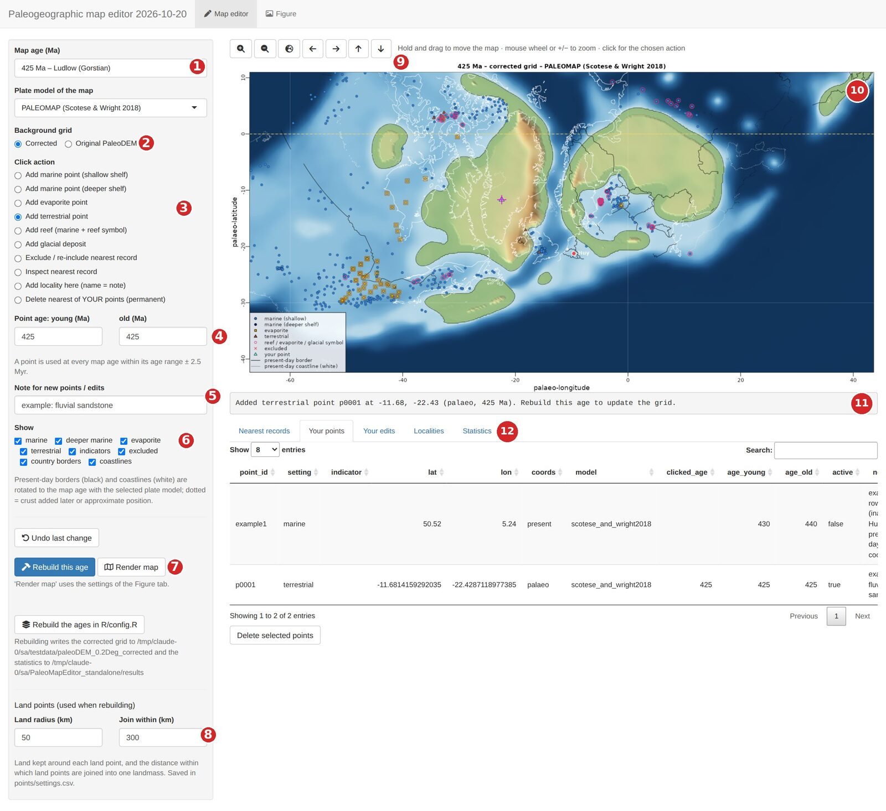
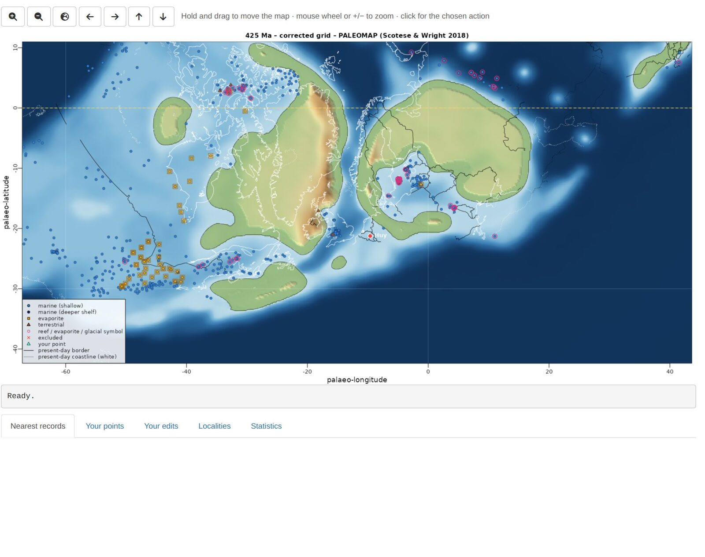
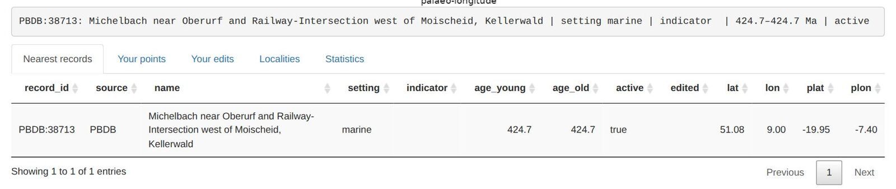
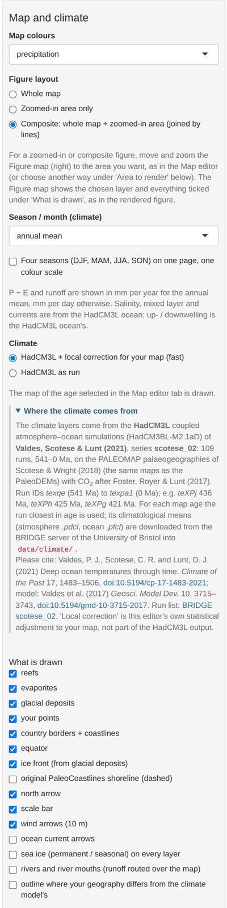
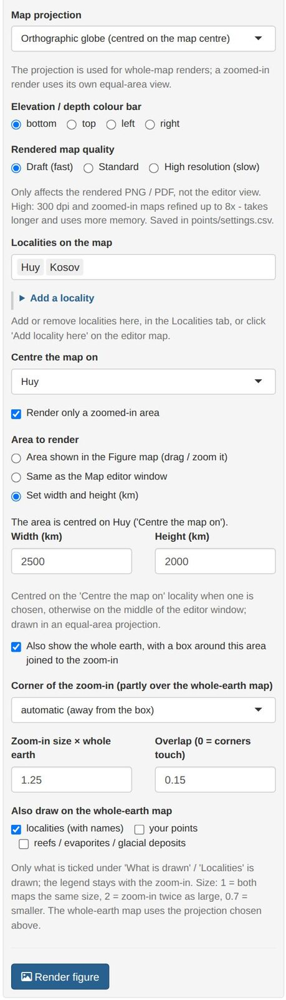
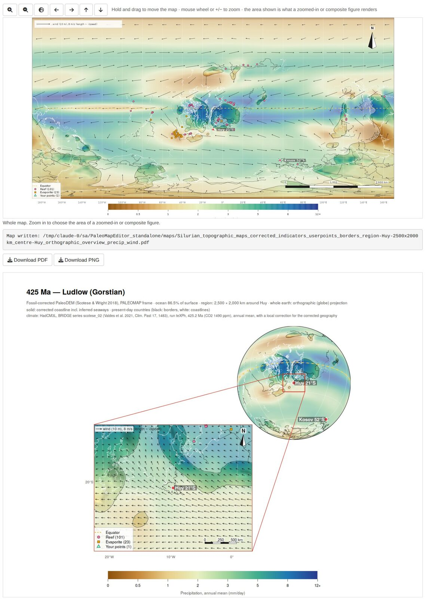

User guide: from setup to your first figure
Source:vignettes/articles/getting-started.Rmd
getting-started.RmdPaleoMapR lets you check a paleogeographic map against the fossil and rock record, correct it, and draw publication maps of the result, optionally coloured by climate. This guide goes from the installation to a composite figure of a study area. The screenshots show the Silurian (425 Ma, Ludlow) around Avalonia and Baltica.
1. What you need
| R | version 4.2 or newer, https://cran.r-project.org |
| Internet | once, for the setup (R packages, Python and about 1 GB of open data), and for ages outside 445–415 Ma the first time you open them |
| Disk space | about 2 GB (data ~650 MB after the setup; R packages and Python 0.5–1 GB) |
| Python | not needed beforehand: the setup downloads its own small Python with pyGPlates |
2. Install and set up (once)
Windows, with the launcher. Install R, download PaleoMapR-launcher.zip,
unzip it to a folder with a short, simple path (for example
Documents\Apps; avoid OneDrive or Dropbox folders), and
double-click SETUP.bat. It installs PaleoMapR, puts a
PaleoMapR icon on the desktop and prepares the data in
the unzipped PaleoMapR folder, which is your working
folder. Start the editor with the icon.
From R (Windows, macOS, Linux).
install.packages("remotes")
remotes::install_github("stratigraphy/PaleoMapR")
PaleoMapR::pm_setup("D:/Maps/PaleoMapR") # once, 20-60 minutes
PaleoMapR::run_app("D:/Maps/PaleoMapR") # every timeWithout a folder, both use pm_folder(): a folder
PaleoMapR in your home folder (Documents on Windows).
The setup:
- makes a small Python environment with pyGPlates (plate rotations)
using the tool uv, which downloads Python 3.12 itself. It is
stored in your R user-data folder (Windows:
C:\Users\<you>\AppData\Roaming\R\data\R\paleomapeditor\venv) and shared by all working folders; - downloads into
data/the PaleoDEMs 0–540 Ma (~280 MB, EarthByte), the PaleoCoastlines (~75 MB, Zenodo), the PBDB and Macrostrat records and the sea-level curve, and builds the table of database records; - downloads the HadCM3L climate files of the chosen ages (~30 MB per age, University of Bristol);
- builds the fossil-corrected grids of the chosen ages (1–2 minutes
per age per core; the plate model is downloaded once into
models/).
If a download fails or is interrupted, run the setup again: finished steps and files are kept.
Which ages? By default the Silurian ages 445–415 Ma
(about 30 minutes). pm_setup(ages = "all") prepares all 109
ages, 0–540 Ma (several hours, ~3 GB of climate files);
pm_setup(ages = c(300, 305, 310)) or
seq(250, 200, by = -5) your own (each matched to the
nearest map age). With the launcher, run SETUP.bat all or
SETUP.bat 300 305 310 from a command window. Any age also
works directly in the editor: choose it and press Rebuild this
age.
The working folder
| Folder | Content |
|---|---|
data/ |
the downloaded data sets and HadCM3L climate files; the corrected
grids (data/paleoDEM_0.2Deg_corrected) |
models/ |
plate models, downloaded when first used (PALEOMAP; the others when you choose them) |
points/ |
your work: your points, record edits, localities and settings (section 4.6); the table of database records |
maps/ |
rendered figures (PNG and PDF) |
results/ |
statistics of the corrected grids |
3. The screen at a glance

| # | Control | # | Control |
|---|---|---|---|
| 1 | Map age (all PaleoDEM ages, Silurian first) and plate model | 7 | Rebuild this age (corrected grid) and Render map |
| 2 | Background grid: corrected or original PaleoDEM | 8 | Land points: radius and joining distance |
| 3 | Click action: what a short click on the map does | 9 | Zoom in and out, whole map, move |
| 4 | Age range given to new points | 10 | The map: drag to move, wheel to zoom, click to act |
| 5 | Note stored with new points and edits | 11 | Status line: what just happened, what to do next |
| 6 | Show: which records and overlays are drawn | 12 | Tables: nearest records, your points, your edits, localities, statistics |
Symbols on the editor map: blue circles = marine (dark blue: deeper shelf), orange squares = evaporites, brown triangles = terrestrial, pink rings = reef, evaporite or glacial indicator, red crosses = excluded, green triangles = your points, magenta cross = the last point you clicked. Black lines are present-day borders and white lines present-day coastlines, rotated to the map age (dotted: crust that formed later or is uncertain).
4. Map editor: checking and correcting a map
4.1 Look around
- Choose the map age (1). The list holds every PaleoDEM age from 0 to 540 Ma; the ages prepared by the setup have corrected grids. For other ages choose Original PaleoDEM (2) until you have rebuilt them.
- Move: hold the left mouse button and drag. Zoom: mouse wheel (around the cursor) or the +/− buttons (9). The globe button goes back to the whole map.
- Use Show (6) to hide classes of records, for example untick marine to see the terrestrial records better.

4.2 Inspect a record
Set the click action to Inspect nearest record and click on a symbol. The status line and the Nearest records table show the record: its ID (PBDB collection number, or MS: Macrostrat unit), name, setting, age range, present-day and palaeo-coordinates.

4.3 Add your own points
- Set the age range (4) of the point. A point is used at every map age within its range ± 2.5 Myr; by default it is the current map age.
- Optionally type a note (5), such as the formation or the reference. It is stored with the point.
- Choose the click action (3) and click on the map where the record is:
| Click action | Effect when the grid is rebuilt |
|---|---|
| Add marine point (shallow shelf) | the area around it becomes shallow sea (about −30 m) |
| Add marine point (deeper shelf) | deeper shelf (−400 m by default), blending into the surrounding shelf; not deep ocean |
| Add evaporite point | sea at or just below sea level (−5 m) |
| Add terrestrial point | kept as land: a rounded patch (Land radius, 50 km) joined to nearby land (Join within, 300 km); near such points the original PaleoDEM relief is restored where the map is land again |
| Add reef / Add glacial deposit | a marine point with a reef symbol / a glacial-deposit symbol (glacial deposits do not decide land or sea) |
| Add locality here (name = note) | a named locality for the figures (type the name in the Note box first) |
Points clicked on the palaeo-map are stored with their plate, so they move with it at other ages. The Your points table lists them; select rows and press Delete selected points, or use the click action Delete nearest of YOUR points. Undo last change reverts the last addition or edit.
4.4 Switch off wrong database records
Choose Exclude / re-include nearest record and click on a record: it gets a red cross and is ignored when the grid is rebuilt. Click it again to include it again. All exclusions are listed under Your edits, where you can remove them. Use this for records that are clearly mislocated or misclassified (check them with Inspect first).
4.5 Rebuild the corrected grid
Your points and edits only change the map after a rebuild. Press Rebuild this age (7): it takes about a minute, and the status line reports the records used, the seaways added, the seas still isolated (should be 0) and the ocean area. Rebuild the Silurian ages rebuilds 445–415 Ma at once on several cores. The Statistics tab lists the results of all rebuilt ages. Then switch the background grid to Corrected to see the new map.
Land points (8): Land radius is the land kept around each terrestrial point, Join within the distance within which terrestrial points are joined into one landmass (and to existing land). Larger values give larger, smoother landmasses. Both are saved and used at the next rebuild.
4.6 Where your work is stored
Everything is a plain CSV file in points/: you can open,
edit or share them. To share your corrections, send
user_points.csv and record_edits.csv to a
colleague, who copies them into their own points/ folder
and rebuilds.
| File | Content |
|---|---|
user_points.csv |
your points: setting, indicator, lat, lon, present or palaeo coordinates, age range, active, note |
record_edits.csv |
database records you excluded, re-included or re-classified |
localities.csv |
named localities (present-day lat/lon) and whether they are shown |
settings.csv |
settings changed in the editor: projection, quality, colour bar, land points |
records_base.csv |
the database records (PBDB and Macrostrat); rebuilt automatically when needed |
Close a CSV file in Excel before you continue in the editor: Excel locks the file, and the editor then cannot save your change (it says so in the status line).
5. Figure tab: making maps
The Figure tab has the settings of the rendered maps on the left, an interactive Figure map on the right (it shows the chosen layer and overlays; move and zoom it to choose the area of zoomed-in figures) and the rendered figure below it, with download buttons. Render map in the Map editor uses the same settings.


- Map colours: topography or a climate layer: precipitation, near-surface air temperature (brought to the map heights with a lapse rate), precipitation − evaporation, runoff, freshwater into the sea (P − E plus rivers routed over your map), river water, why the sea is fresher or saltier, sea-surface salinity, up- and downwelling, mixed-layer depth, surface O2 saturation, surface density, sea ice.
- Figure layout: whole map, zoomed-in area only, or composite (whole earth and zoom-in, joined by lines).
- Season / month: annual mean, DJF, MAM, JJA, SON or one month; Four seasons puts DJF–SON on one page with one colour scale.
- Climate: HadCM3L + local correction adjusts the model fields to your corrected geography (land fraction around each point, sea upwind, relief, height), learned from the same model run; HadCM3L as run shows the model unchanged.
- What is drawn: reefs, evaporites, glacial deposits, your points, borders and coastlines, equator, ice front, the original PaleoCoastlines shoreline, north arrow, scale bar, wind and current arrows, sea ice, rivers, and a dashed outline where your geography differs much from the model’s (least reliable climate).
- Projection (whole maps): Mollweide, Robinson, Equal Earth, Winkel tripel, Hammer, Eckert IV, Plate Carrée, orthographic globe, south or north polar. Zoomed-in areas use their own equal-area projection.
- Quality: draft (150 dpi, fast), standard (220 dpi), high (300 dpi, zoom-ins refined up to 8×, slow).
- Localities: which are labelled (with their palaeo-latitude); centre the map on a locality (it then follows the locality through time) or on a longitude.
Render figure writes a PNG and a vector PDF to
maps/ and shows the result; Download PDF /
PNG saves a copy where you want. In the PDF every label and
line is a separate, editable object (Illustrator, Inkscape, Affinity);
only the shaded relief is an image.
5.1 Recipe: a composite figure of your study area
- In the Map editor, choose the age and make sure the area is corrected the way you want (section 4); rebuild if needed.
- In the Figure tab, choose the Map colours (for example precipitation) and the season.
- Under Figure layout, choose Composite.
- Centre the map on your locality and, under Area to render, choose Set width and height (km) (for example 2500 × 2000 km), or move and zoom the Figure map to the area and keep Area shown in the Figure map.
- Choose the whole-earth projection (for example the orthographic globe) and tick north arrow, scale bar and wind arrows as you like.
- Press Render figure: draft quality first, high for the final version.

6. Using the code from R
All steps behind the editor can be run from a script:
pm <- PaleoMapR::pm_load("D:/Maps/PaleoMapR")
pm$run_dem_correction(c(430, 425)) # corrected grids
pm$make_maps(425, layer = "precipitation", wind = TRUE) # PNG and PDF in maps/
pm$SILUCARB$ages # the settings, e.g. the default agesThe settings (correction parameters, default ages, map look) are in
the list pm$SILUCARB; their defaults and explanations are
in inst/app/R/config.R of the package source.
7. Problems
| Problem | Solution |
|---|---|
| “No corrected grid for … Ma yet” | Press Rebuild this age, or choose Original PaleoDEM as background grid. |
| My new points do not change the map | Rebuild the age (4.5) and choose the Corrected grid. Check that the point’s age range covers the map age (± 2.5 Myr) and that it is active. |
| “Could not save … – the file is locked” | A CSV in points/ is open in Excel (or read-only). Close
it and try again. |
| The setup ends with “Not complete yet: …” | A download failed (server busy or connection lost). Run the setup again: finished steps are skipped and only the missing parts are fetched. |
| The climate layer is empty / “could not be downloaded” | Ages outside the prepared ones need internet the first time. The files are kept afterwards. |
| The editor does not open in the browser | From R, look in the console for the address (http://127.0.0.1:…) and open it
by hand. With the launcher, see state/setup_log.txt. |
| Python / pyGPlates errors at the start | Restart R and run pm_setup() (or SETUP.bat) again. To
start Python from scratch, delete the paleomapeditor\venv
folder named in section 2. If uv fails, the setup tries a conda
environment “paleomap”. |
| A package fails to install | Update R and run the setup again. On Linux, sf and terra need the GDAL, GEOS, PROJ and udunits system libraries. |
| Corporate network or proxy | The setup needs cloud.r-project.org, github.com, pypi.org, earthbyte.org, zenodo.org, paleobiodb.org, macrostrat.org and paleo.bristol.ac.uk. Ask IT, or run the setup once on another network. |
| Rendering is slow | Use draft quality while trying settings; high only for the final figure. |
| Start again with an empty map | Close the editor, move the files in points/ except
records_base.csv to another folder, start the editor and
rebuild. |
Anything else: open an issue or ask in the Discussions.